Right Line
The line broken, bent and bonded in space, creates three-dimensional forms. This very simple statement on geometry and technique is one of Agata Biele ’s elemental design principles. And the Poland based jewellery designer makes sure to come closer and closer to this principle with every collection she creates. For Spring/Summer 2016 she focusses on the optical illusion created by fine lines running through space, more broken than bent or bonded. That’s why the collection bears the name Right Line
